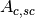
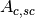
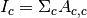
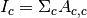
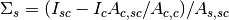
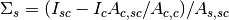

Table of Contents

Provides correction routines for quasielastic, inelastic and diffraction reductions.
These interfaces do not support GroupWorkspace as input.
Calculates absorption corrections in the Paalman & Pings absorption factors that could be applied to the data when given information about the sample (and optionally can) geometry.
 file (_sqw.nxs) or workspace (_sqw). file (_sqw.nxs) or workspace (_sqw).
file (_sqw.nxs) or workspace (_sqw). file (_sqw.nxs) or workspace (_sqw). ,
,  ,  and
,  and
 workspaces as spectra plots.
workspaces as spectra plots.These options will be automatically preset to the default values read from the sample workspace, whenever possible. They can be overridden manually.
Depending on the shape of the sample different parameters for the sample dimension are required and are detailed below.

The calculation for a flat plate geometry is performed by the FlatPlatePaalmanPingsCorrection algorithm.
 ...
...
The calculation for a cylindrical geometry is performed by the CylinderPaalmanPingsCorrection algorithm, this algorithm is currently only available on Windows as it uses FORTRAN code dependant of F2Py.
.....The calculation for an annular geometry is performed by the CylinderPaalmanPingsCorrection algorithm, this algorithm is currently only available on Windows as it uses FORTRAN code dependant of F2Py.
The options here are the same as for Cylinder.
The main correction to be applied to neutron scattering data is that for absorption both in the sample and its container, when present. For flat plate geometry, the corrections can be analytical and have been discussed for example by Carlile [1]. The situation for cylindrical geometry is more complex and requires numerical integration. These techniques are well known and used in liquid and amorphous diffraction, and are described in the ATLAS manual [2].
The absorption corrections use the formulism of Paalman and Pings [3] and
involve the attenuation factors  where
where  refers to
scattering and
refers to
scattering and  attenuation. For example, is the
attenuation factor for scattering in the sample and attenuation in the sample
plus container. If the scattering cross sections for sample and container are
attenuation. For example, is the
attenuation factor for scattering in the sample and attenuation in the sample
plus container. If the scattering cross sections for sample and container are
 and
and  respectively, then the measured
scattering from the empty container is  and
that from the sample plus container is
respectively, then the measured
scattering from the empty container is  and
that from the sample plus container is  , thus .
, thus .
References:

The Apply Corrections tab applies the corrections calculated in the Calculate Corrections tab of the Indirect Data Analysis interface.
This uses the ApplyPaalmanPingsCorrection algorithm to apply absorption corrections in
the form of the Paalman & Pings correction factors. When Use Can is disabled
only the factor must be provided, when using a container the
additional factors must be provided: , and
.
Once run the corrected output and can correction is shown in the preview plot, the Spectrum spin box can be used to scroll through each spectrum. Note that when this plot shows the result of a calculation the X axis is always in wavelength, however when data is initially selected the X axis unit matches that of the sample workspace.
The input and container workspaces will be converted to wavelength (using ConvertUnits) if they do not already have wavelength as their X unit.
The binning of the sample, container and corrections factor workspace must all match, if the sample and container do not match you will be given the option to rebin (using RebinToWorkspace) the sample to match the container, if the correction factors do not match you will be given the option to interpolate (SplineInterpolation) the correction factor to match the sample.
file (_sqw.nxs) or workspace (_sqw). file (_sqw.nxs) or workspace (_sqw).
The Absorption Corrections tab provides a cross platform alternative to the previous Calculate and Apply Corrections tabs.

Flat plate calculations are provided by the IndirectFlatPlateAbsorption algorithm.
.....Annulus calculations are provided by the IndirectAnnulusAbsorption algorithm.
.....Cylinder calculations are provided by the IndirectCylinderAbsorption algorithm.
...
The Container Subtraction Tab is used to remove the containers contribution to a run.
Once run the corrected output and can correction is shown in the preview plot, the Spectrum spin box can be used to scroll through each spectrum. Note that when this plot shows the result of a calculation the X axis is always in wavelength, however when data is initially selected the X axis unit matches that of the sample workspace.
The input and container workspaces will be converted to wavelength (using ConvertUnits) if they do not already have wavelength as their X unit.
Categories: Interfaces | Indirect
{kind=link}
{kind=link}
{kind=link}
{kind=link}